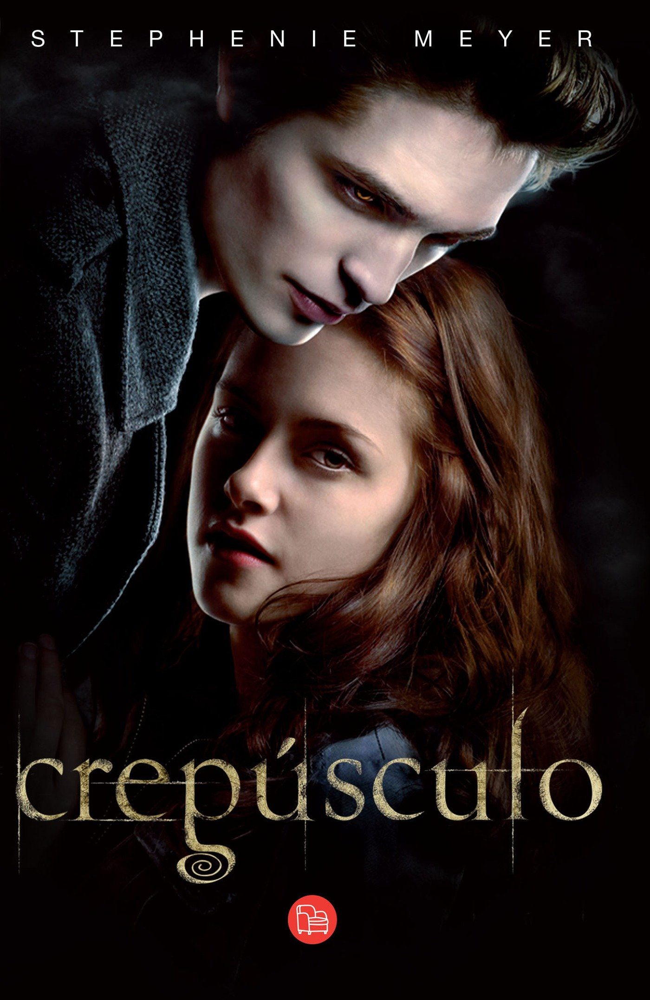

Crepusculo
Autor: Stephenie Meyer.
La protagonista de la historia es Isabella Marie Swan, una joven de diecisiete anios que se muda a Forks, Washington, despues de que su madre se vuelva a casar con Phil, un jugador de beisbol, el cual es su nuevo padrastro. Debido al trabajo de este viaja constantemente y Bella decide irse a vivir con Charlie, su padre, para que asi su madre pueda viajar al lado de Phil. En su nuevo colegio conoce a Eric, Mike, Tyler, Jessica y Angela, que se convierten en sus nuevos amigos.
En su primer dia de clase, Bella ve a cinco estudiantes que le llaman la atencion por su belleza y su palidez. Ellos se sientan alejados de todo el mundo, razon por la cual tienen apenas relacióo con el resto de estudiantes. Son los hermanos Cullen; Edward, Emmett, Jasper, Alice y Rosalie. En realidad no son hermanos biologicos, sino que todos fueron adoptados por el doctor Carlisle Cullen y su esposa, Esme Cullen. Ademas, algunos de ellos establecen relaciones sentimentales, como Jasper y Alice y Rosalie y Emmett.
